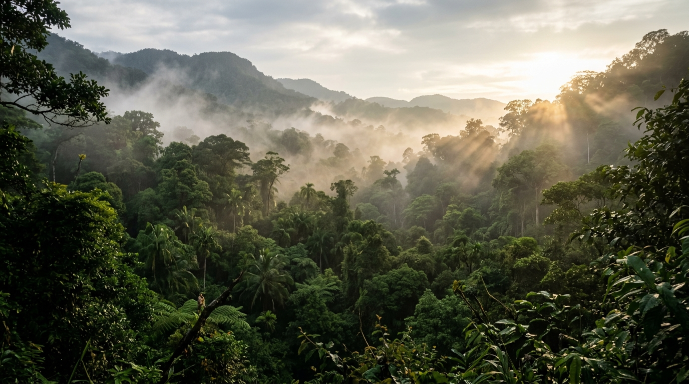

Land Enclosure, Systematic Extermination & Rain Forest Loss
The Cost of
Colonial Expansion
Investigating the devastating structural transformation of Sri Lanka’s montane rain forests, state bounty systems, and the colonial civil administration’s systematic eradication of native highland wild herds.
Herds culled under British treasury bounty (1825–1855)
Average Gazette reimbursement per tail/snout submitted
Virgin wet-zone canopy clear-felled for coffee & tea
Current residual elephant distribution in wet montane zone
State Bounty System & Pest Reclassification
Administrative reinterpretation of native megafauna from sacred cultural sovereigns into state-sanctioned agricultural impediments.
From Cultural Sovereign to Crown Hazard
Following the fall of the Kingdom of Kandy in 1815 and the Crown Lands Encroachment Ordinance No. 12 of 1840, indigenous communal land tenures (Gabadāgam and forest commons) were seized by the British Crown. To protect burgeoning European commercial coffee syndicates, the wild elephant was legally reclassified as an agricultural pest and vermin hazard.
The colonial government instituted cash bounty rewards in official Gazette proclamations. Colonial district cutcheries paid from half-a-crown (2s 6d) to over seven shillings upon the physical presentation of severed tails or snouts. These payouts spurred an unregulated hunting commercial sector, transforming military garrison officers, district agents, and itinerant European planters into professional cullers.
“Paid to Lieutenant-Superintendent Rogers and native hunting parties for 326 tails lodged at the Badulla Kachcheri between the months of April and October... £40 15s 0d.”
Extract from the Government Gazette of Ceylon, Financial Return for the Central Province, 1837Totals represent only state-subsidized tail redemptions filed at colonial cutcheries. Mortality inflicted by private plantation militias, uncollected mortalities, and secondary snares remain unindexed in official accounts.
Major Thomas Rogers & The Hunting Culture

Rogers was recognized by the Colombo colonial administration as both an infrastructural road-builder and a ruthless suppressor of local wildlife populations.
The Mechanization of Sport & Estate Clearing
Colonial memoirs written by Major Thomas Skinner (Fifty Years in Ceylon) and Sir Samuel Baker (The Rifle and the Hound in Ceylon) demonstrate that sport-hunting culture was seamlessly entwined with imperial territorial expansion. Major Rogers maintained rooms lined with collected tusks and tails at his residence in Badulla. His culls, carried out with heavy two-groove rifles, were sanctioned by estate consortiums eager to safeguard newly built transport roads and coffee saplings from migration herds.
Archival dispatches claim Rogers averaged an extermination rate of over 10 adult wild elephants per month between 1835 and 1844.
Gunpowder allowances and cartridge consignments were directly drawn from British Crown ordnance stockpiles under pest-clearance bylaws.
The Haputale Strike: Historical Reality vs Karmic Lore
On 7 June 1845, while standing on the verandah of the Haputale rest house waiting out a monsoon thunderstorm, Major Thomas Rogers was struck dead instantly by lightning at age forty-one. His sudden death gave rise to legendary status across both British colonial society and indigenous Sinhala folklore.
The Mythological Narrative: Popular folklore persists that Rogers’ grave marker at the Nuwara Eliya cemetery was subsequently struck by lightning multiple times, interpreting it as retributive cosmic justice for the slaughtered elephants.
The Archival Fact: Public Works Department and colonial diocese records corroborate that high-altitude rest houses along the Haputale pass possessed inadequate grounding against violent orographic storm surges. While the tombstone in Nuwara Eliya did sustain historical physical fracturing from geological subsidence and moisture wear, lightning strikes upon the actual gravesite remain uncorroborated by church registers.
Highland Transformation: The Severed Corridors
How clear-felling for coffee and monoculture tea permanently pushed Ceylon's elephants out of their ancestral montane rain forest sanctuaries.
Pre-1830 Montane Wilderness vs. Post-1880 Industrial Tea Enclosure
Prior to colonial intervention, continuous canopy forests linked Adam's Peak (Sri Pada) through Horton Plains, Nuwara Eliya, and down into the lower Uva valleys. Elephant herds migrated vertically, moving to misty highland plateaus during the southwest monsoons to browse tender montane bamboo and dwarf bamboo (Arundinaria debilis).
Unbroken montane rain forests and moss-draped cloud forests; year-round perennial water sources; uninhibited genetic flow between low-country wet zone and central mountain spine.

Archival Evidence Register
Primary historical documents preserved across colonial registries, survey archives, and administrative state papers.
Bounty Disbursement Ledgers
Official Ceylon government treasury vouchers recording monetary redemptions for tails delivered to district colonial cutcheries in Kandy, Ratnapura, and Badulla.
Fifty Years in Ceylon
Autobiographical accounts by Major Thomas Skinner, Commissioner of Public Works, documenting the systematic road clearance expeditions and elephant shooting parties.
Ceylon Topographical Estate Maps
Crown Land grant surveys demonstrating rapid conversion of unbroken virgin cloud forest lots into private coffee plantations along the Nuwara Eliya plateau.
Forest Encroachment Reports
Legislative committee findings on watershed erosion, drying water tables, and the near-total disappearance of wet-zone elephant populations following crop clearings.
The Historical Roots of Modern Conflict: Arid Zone Compression
Contemporary Human-Elephant Conflict (HEC) in Sri Lanka is not merely the outcome of modern population expansion; it is the structural aftershock of 19th-century colonial land enclosures.
When colonial estates erased the cloud forest corridors of Sri Pada and Horton Plains, wild herds lost their perennial wet-season sanctuaries. Elephants were permanently confined to the dry and intermediate zones, which suffer severe seasonal drought and sparse dry-season biomass.
Herds compressed into dry-zone lowlands now intersect with post-independence peasant colonization schemes and Mahaweli irrigation projects. Without access to their ancestral highland pastures, survival forces herds across agricultural fringes, igniting the modern HEC crisis.